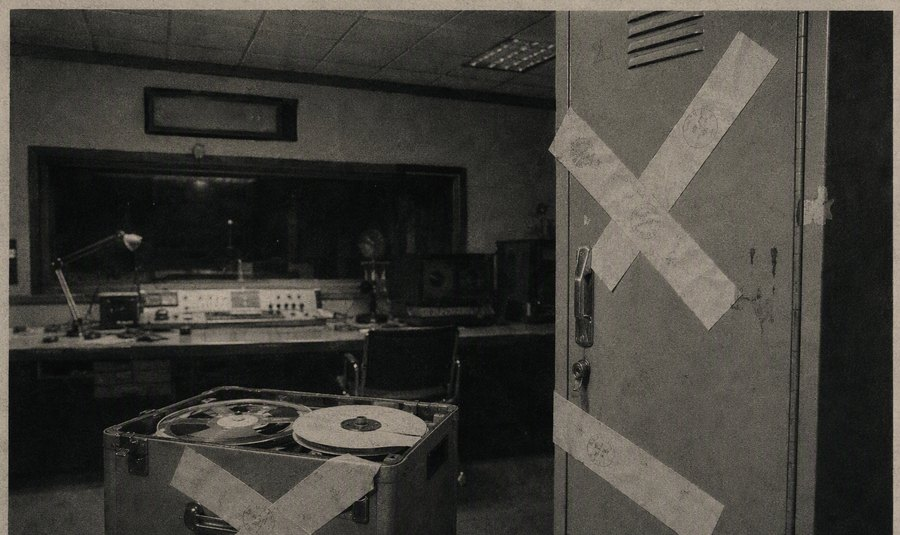

关闭×

广告

1999-04-06 本台记者 报道 编辑：节目部
【本报讯】本台前节目主持人夜莺（播音名）自 3 月中旬起未到岗，至今已逾三周。节目组回应称，夜莺的离岗系"个人事务"，其手头节目已全部停播归档，请广大听众不要轻信、传播相关传言。
据节目组介绍，夜莺最后一次到岗为 3 月 12 日，当日其完成了节目录制，次日未再出现，也未按惯例办理请假手续。其家属已于 3 月下旬向辖区派出所报案。目前，夜莺的工牌、更衣柜及最后一期节目母带仍封存于广电大楼 14 层办公区，待其本人或家属领取。
技术科工作人员在整理归档母带时发现一个细节：夜莺最后一期节目的播出母带末尾，时间码定格在 03:00，超出当日节目时长近四十分钟，多出的部分只有持续的静电噪声。技术科解释为"老式开盘机的计时故障"，已按流程消磁处理。

都以为频率盘上那两个挨在一起的"三"是门。错了。333 是她立在走廊尽头的门牌，门牌上从来没有门。她的节目，一共十三期——她的房间，在她的期数里。谁要找她，把门牌换成她的期数。
（这段备注按台规不予公开，原因不明。）
近期有听众来信反映，称在凌晨时段收听到与夜莺嗓音相似的播音，并配有深夜点歌环节。本台郑重声明：本台每日 00:30 后即停止一切播音，凌晨时段没有任何节目，所谓"凌晨节目"与本台无关，请广大听众切勿寻找不明信号源。
截至发稿，节目组仍未能与夜莺取得联系。知情人士如有线索，请与本台台务办公室联系（地址见"关于我们"）。